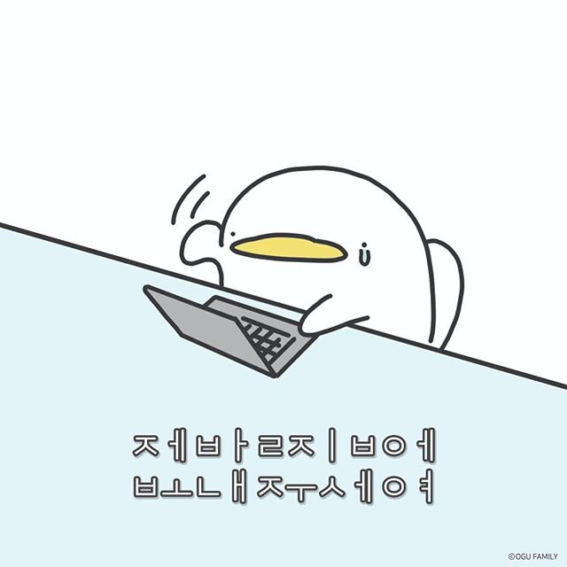

Hwang YaeZy
haegi3564@naver.com
+82 10 3734 3564
모든 국민은 거주·이전의 자유를 가진다. 공무원의 직무상 불법행위로 손해를 받은 국민은 법률이 정하는 바에 의하여 국가 또는 공공단체에 정당한 배상을 청구할 수 있다. 이 경우 공무원 자신의 책임은 면제되지 아니한다. 대통령은 법률이 정하는 바에 의하여 사면·감형 또는 복권을 명할 수 있다. 제2항과 제3항의 처분에 대하여는 법원에 제소할 수 없다. 대한민국은 국제평화의 유지에 노력하고 침략적 전쟁을 부인한다.